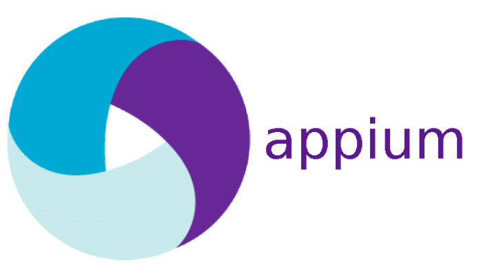
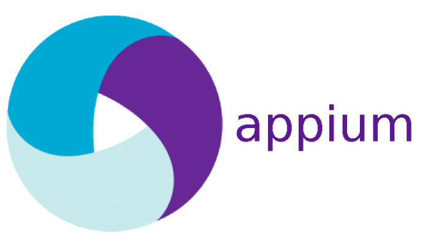

From: July 2020 To: Current
ITJuana - DEXCOM
(Appium / Selenium -- Java)
Working in a company leader in the diagnosis and treatment of Diabetes in USA and 30
countries. I'm part of the team responsible of creation and maintenance of test scripts
built in Java; this is also combined with the use of tools like Appium/Selenium for
scripts design and execution, Log4J for test results enhancement, and a company owned
Automation framework. Some additional tools are used in the test and requirement
management process such as Jira, Rational, Confluence, Bamboo, Artifactory, XCODE,etc.
From: September 2015 To:
July 2020
Capgemini - T-Mobile & Coca-cola FEMSA
Senior QA Consultant
I’m working as test leader of a Quality Assurance and Testing project for one of the
largest Telecomm companies in United States. Main responsibilities are focused on the
analysis, execution and reporting for Test Cases/Scripts on different phases of Testing
Lifecycle (requirements gathering, Test cases creation / execution, defect management,
etc.). Working with Manual and Automation Tools: ALM, UFT, Selenium, TestNG, Jira
From: June 2010 To:
September 2015
Softtek - McKesson
QA Sr. Tester
Working with an important healthcare company in the US. Working in Quality Assurance
area such as Requirement Analysis, Test Cases creation, Test Cases execution, Defect
Reporting, Automation and Performance Testing. I have the opportunity to work with
different tools like Quality Center, Quick Test Professional (QTP) , Performance Center
(LoadRunner), Selenium, Microsoft Test Manager, SharePoint. I'm direct responsible of
the improvement in Quality Assurance process and author of a new Automation Framework.
Direct responsible of providing status to different customers and managers, working with
different technical teams on several different technologies and business areas.
Tools I Know
 
